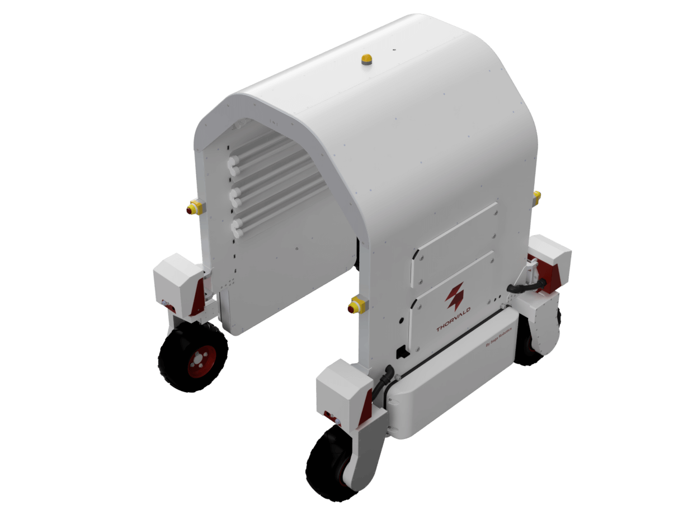
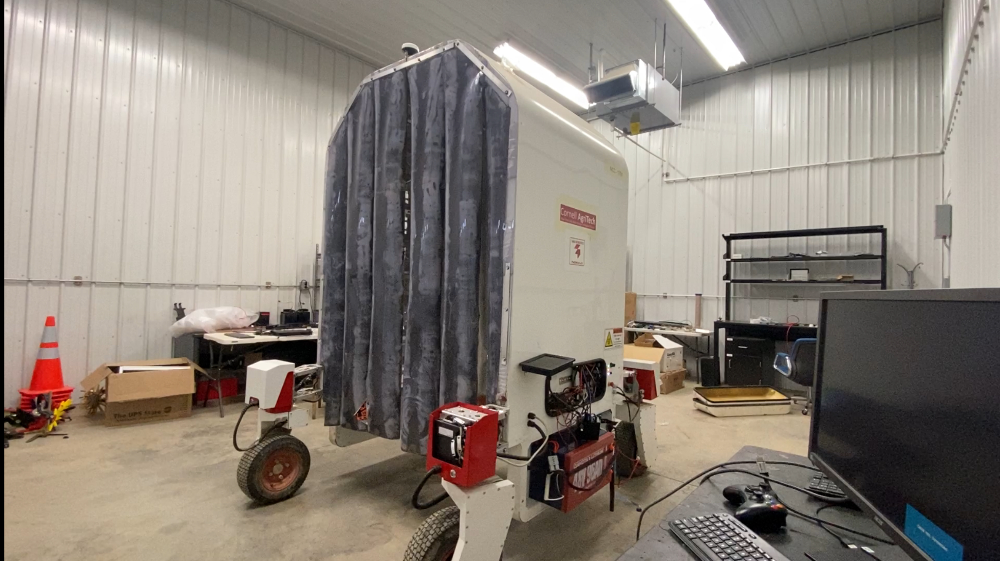

The Thorvald robot is a UV-light platform designed to combat powdery mildew in vineyards by using targeted ultraviolet light treatments. This approach provides a sustainable alternative to chemical applications, reducing environmental impact while maintaining crop health.
As part of our research, the Thorvald’s control system was completely overhauled to run on ROS 2 and Python. ROS 2 provided the foundation for swarm communication across multiple robots—a core goal of our lab is to enable coordinated fleets of agricultural robots operating together across an entire farm. Python was chosen for its accessibility, allowing farmers and researchers to more easily modify and extend the control software for their own applications.
Following the system upgrade, a swarm communication framework was tested using two Thorvald robots. In parallel, a ROS 2 Nav2–based navigation stack was implemented, enabling autonomous waypoint following and coordinated coverage of vineyard rows. Together, these developments demonstrated both the feasibility of UV treatment with multiple robots and the potential of scalable, swarm-enabled agricultural robotics.

The original Thorvald control system was built on ROS 1, which limited its ability to integrate with new research frameworks and multi-robot systems. To address these limitations, the control system was fully revamped to run on ROS 2. This transition provided a more robust foundation for distributed robotics and enabled the development of swarm communication across multiple Thorvald units—a central goal of our lab is to achieve coordinated robotic fleets operating throughout an entire farm.
Alongside the ROS 2 migration, the system was restructured in Python to improve accessibility. By using Python, farmers and researchers without deep robotics expertise could more easily adapt the software to their needs, whether that meant adjusting navigation parameters, testing new behaviors, or integrating custom tools. This update not only modernized the Thorvald platform but also made it more flexible and user-friendly for both research and field applications.
With the control system migrated to ROS 2, the next step was to begin testing multi-robot swarm functionality. Each Thorvald was assigned a unique namespace to separate its topics and services; however, one challenge quickly became apparent. ROS 2’s native communication system broadcasts all topic data across the network, meaning that every robot receives a large amount of unnecessary information from its peers. This overhead can cause significant slowdowns and bandwidth issues in multi-robot deployments.
To address this, the swarm system was integrated with Zenoh, a communication layer that enables selective data sharing. Instead of flooding the network with all robot data, Zenoh allowed only the necessary information—such as position updates and navigation goals—to be transmitted between robots. This optimization made swarm communication far more efficient, enabling the Thorvalds to coordinate effectively while reducing network load. With Zenoh in place, the first swarm system tests were successfully conducted using two Thorvald robots.
In parallel with the swarm testing, a navigation system was developed using ROS 2 Nav2. To keep the system lightweight and practical for vineyard environments, a straight-line planner was implemented alongside a waypoint follower. This approach allowed each Thorvald robot to efficiently follow predefined vineyard rows without requiring the computational complexity of full global planning. By chaining waypoints together, the robots could autonomously traverse the vineyard in a structured pattern, providing reliable coverage for UV-light treatments or other agricultural tasks.